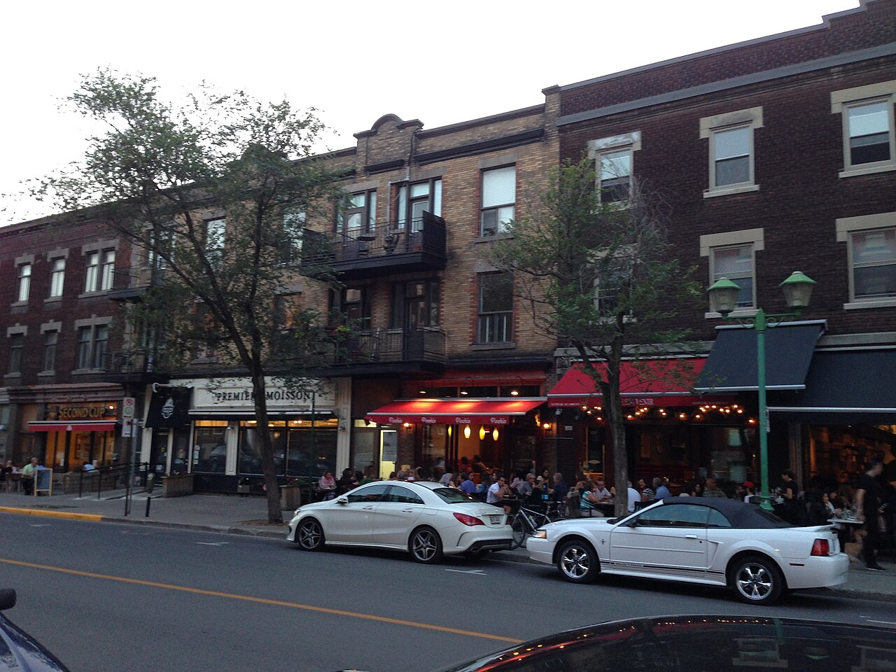
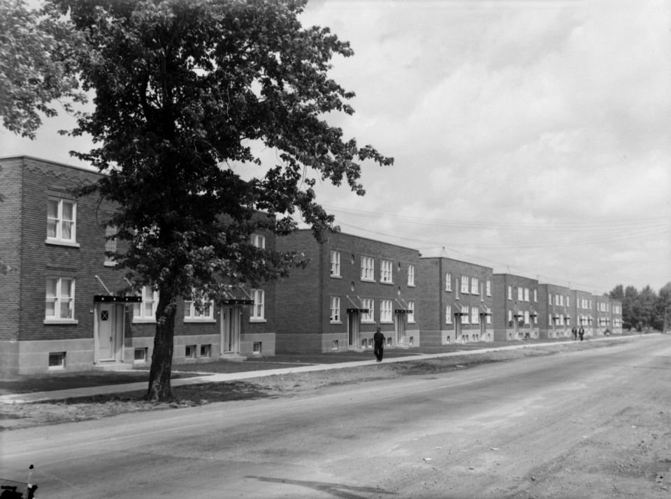

| Place | Local name | Phase years | Storeys | Roof | Window | Cladding | Garage |
|---|---|---|---|---|---|---|---|
| Town of Mount Royal | Faubourg Apartment Block Faubourg (collectif) | 1915 – 1935 | 3 | flat | vertical-2to1 | clay-brick-red, stone-natural | underground |
| Outremont (borough of Montréal) | Apartment building (conciergerie) Immeuble d'appartements — conciergerie | 1940 – 1975 | 3–4 | flat | – | clay-brick | – |
| Outremont (borough of Montréal) | Modern house on the flank Maison moderne du flanc de la montagne | 1940 – 1975 | – | – | – | – | – |
| Le Plateau-Mont-Royal (borough of Montréal) | Apartment block without courtyard L'édifice de rapport sans cour | 1914 – 1960 | 3–4 | flat | – | clay-brick, stone | none |
| Le Plateau-Mont-Royal (borough of Montréal) | Apartment block with courtyard L'immeuble de rapport avec cour | 1914 – 1960 | 3–4 | flat | – | clay-brick, stone | none |
| Rosemont–La Petite-Patrie (borough of Montréal) | Semi-detached duplex with rear garage, Art déco manner Duplex jumelé d'inspiration Art déco, garage en fond de terrain | 1940 – 1960 | 2 | flat | vertical | clay-brick-red | detached |
| Westmount | Interwar apartment house Immeuble d'appartements de l'entre-deux-guerres | 1915 – 1945 | – | – | vertical | clay-brick, stone | – |


